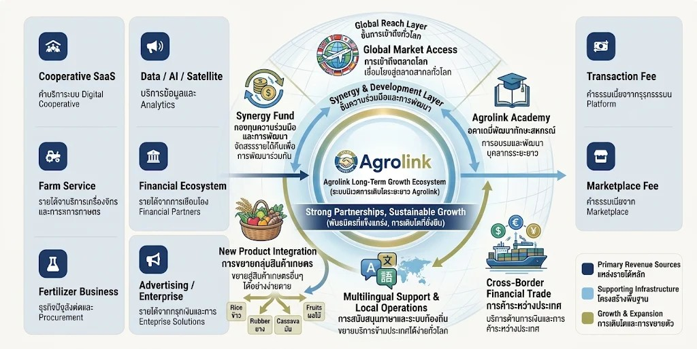

รายได้จากหลายช่องทางบนแพลตฟอร์มเดียว — AgroLink ออกแบบให้มีแหล่งรายได้ที่หลากหลายและเสริมกัน ครอบคลุมทั้งค่าบริการระบบ ค่าธรรมเนียมธุรกรรม และบริการต่อยอดตลอดห่วงโซ่การผลิต

ค่าบริการระบบ Digital Cooperative
ค่าธรรมเนียมจากธุรกรรมบน Platform
ค่าธรรมเนียมจากการจัดซื้อรวม
ค่าธรรมเนียมจาก Marketplace
รายได้จากบริการเครื่องจักรและบริการการเกษตร
ธุรกิจปุ๋ยสั่งตัดและ Procurement
บริการข้อมูลและ Analytics
รายได้จากการเชื่อมโยง Financial Partners
รายได้จากธุรกิจโฆษณาและ Enterprise Solutions
ยิ่งมีผู้ใช้งานเข้าร่วมมากขึ้น แพลตฟอร์มยิ่งมีข้อมูลและมูลค่ามากขึ้น และยิ่งดึงดูดผู้เล่นรายใหม่เข้าสู่ระบบนิเวศมากขึ้นไปอีก — วงจรนี้ขับเคลื่อนการเติบโตของ AgroLink อย่างต่อเนื่อง
แม่แบบเดียวกันปรับใช้ได้กับพืชไร่ พืชยืนต้น ปศุสัตว์ และประมง โดยปรับเฉพาะรายละเอียดขั้นตอนและสัญญาณยืนยัน
พิสูจน์แม่แบบครั้งแรกทั้ง 6 องค์ประกอบ เริ่มภาคกลางตอนล่าง
ใช้โครงสร้างเดียวกับข้าวเกือบทั้งหมด ปรับปฏิทินเพาะปลูก
ไก่ สุกร โค — เปลี่ยนสัญญาณยืนยันเป็นน้ำหนักสัตว์และบันทึกวัคซีน
รองรับหักบัญชีแบบสะสมทีละน้อย พร้อม Traceability มาตรฐานส่งออก
กุ้ง ปลา — เชื่อมเซนเซอร์ IoT บ่อและข้อมูลเตือนภัยจากกรมประมง
ทุกระยะใหม่ที่เปิดเพิ่มช่องทางรายได้ตามโมเดลธุรกิจที่แสดงไว้ด้านบน — ยิ่งขยายสินค้า ยิ่งเพิ่มพื้นที่การเติบโตของรายได้
ติดต่อทีมงานเพื่อขอข้อมูลแผนธุรกิจฉบับเต็ม หรือนัดหมายพูดคุยกับทีมผู้บริหาร